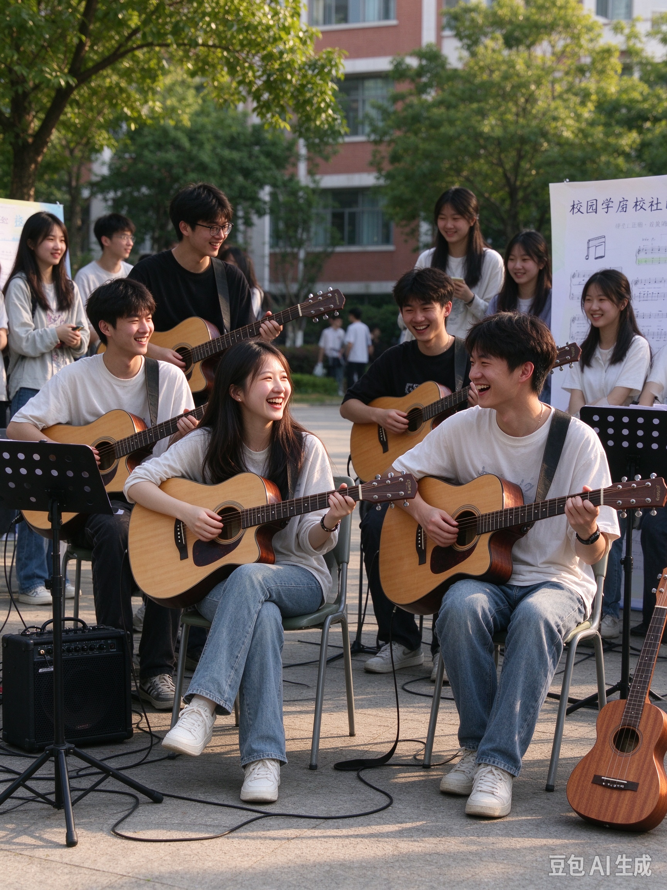

一把吉他，一群朋友，一整个大学的浪漫夜晚
吉他社成立于 2015 年秋，是学校历史最悠久、氛围最温暖的音乐类社团之一。十年间，从这里走出了校园十佳歌手、原创音乐人、乐队主唱和无数个抱着吉他坐在草坪上唱歌的黄昏。我们不是最"高冷"的技术型社团，也不是纯娱乐的玩耍组织——我们相信，音乐是最好的社交方式，而吉他是最容易上手的入门乐器。
社团目前下设三个方向：弹唱部，负责民谣弹唱、流行改编与校园路演，是社团人气最高的部门，几乎每周都有草坪弹唱夜；指弹部，钻研指弹独奏、编曲与原创，社里有多把高端面单琴和效果器供社员免费借用；创作部，聚集了一群写歌的人，从和弦走向到歌词打磨，互相点评，每年春天都会把社员的原创作品录制成社团合辑。无论你是想学会给自己唱一首歌，还是想站上万人舞台，这里都有属于你的位置。
我们从不要求入社时就会弹琴。事实上，每一年招进来的新社员里，超过七成是"零基础"。社团的学长学姐们编写了一套内部教材《从零到第一首歌》，配套二十节循序渐进的公开课：第一节课教你抱琴姿势和调音，第三节课你就能弹出完整的和弦，第六节课你已经可以边弹边唱《平凡之路》。很多社员回忆说，加入吉他社最正确的决定，就是在什么都不会的时候推开了这扇门。
除了日常教学，社团每年固定承办三场大型活动："迎新弹唱会"在九月让新社员第一次感受到舞台的灯光；"冬日不插电音乐会"在十二月的报告厅里用最纯粹的木吉他声音温暖整个冬天；"春日原创音乐节"则是社团一年一度的巅峰，社员原创作品将面向全校演出，优秀作品还会被推荐到市级大学生音乐节。社团还经常组织户外活动——春天的公园野餐弹唱、夏天的露营篝火弹唱会、期末之后的"解压琴房"，让大学四个季节都有琴声。
在吉他社，你收获的不只是琴技。你会认识一群可以一起熬夜排练、一起吃夜宵、一起在毕业时抱头痛哭的朋友；你会得到从社里借出的练习琴、教材和排练场地；你还有机会进入学校的各类文艺晚会、商演和比赛。十年社史里，那些最耀眼的名字，很多都是从"我好像连和弦都按不响"开始的。现在，轮到你了。
返回顶部 ↑下面是吉他社 2026 年春季学期的活动安排总表。每周固定活动之外，还有三期大型演出，请各位社员留意时间、提前报名。
| 吉他社 2026 年春季学期活动安排表 | |||
|---|---|---|---|
| 时间 | 活动名称 | 地点 | 参与对象 |
| 三月 | 新成员见面会 | 艺术楼 A101 音乐教室 | 全体社员 |
| 吉他基础教学公开课（第一讲） | 艺术楼 A101 音乐教室 | 零基础新社员 | |
| 四月 | 草坪弹唱夜 · 春季场 | 中心草坪 | 全校师生 |
| 指弹进阶工作坊 | 琴房 302 | 指弹部社员 | |
| 五月 | 春日原创音乐节（彩排 + 正式演出，为期一周） | 全体社员 | |
| 六月 | 期末解压琴房 & 毕业欢送弹唱会 | 琴房 302 | 全体社员 |
温馨提示：新成员见面会与吉他基础教学公开课均在艺术楼 A101 音乐教室举行，两场活动当天可凭借社团招新回执直接入场；请自带吉他，没有琴的同学可以在现场登记借用社团练习琴。
返回顶部 ↑下面这张照片是社团日常路演的真实写照：有男生也有女生，有弹唱的主音，也有负责和声与打节奏的伙伴。每一次草坪弹唱，都会围起一圈又一圈的观众。

▲ 点击图片，查看「春日弹唱夜」活动详细介绍
除了静态照片，我们还用社团的照片做成了一段特效短视频，记录了这一年里草坪上的黄昏、琴弦上的手和朋友们的笑脸。点击下方播放器即可观看（记得打开声音）：
@大三学长 阿哲：两年前的九月，我在招新摊位前徘徊了整整十分钟。我连吉他有几根弦都说不太准，更别提会不会弹了。是当时的社长笑着说"我们这里一半人进来的时候都是小白"，我才壮着胆子填了表。第一节课我按 F 和弦按到手指发抖，回到宿舍甚至想过退社。但室友——现在是我最好的朋友——拉着我每天晚自习后去琴房练四十分钟。一个月后的草坪弹唱夜，我第一次在众人面前弹完了整首《成都》。那种手心出汗又兴奋到发抖的感觉，我到现在都记得。现在我是指弹部的负责人，去年还站上了原创音乐节的舞台。吉他社教会我的第一件事不是和弦，而是"原来我也可以"。
@大二学妹 小雨：我加入吉他社其实是为了追星——我喜欢的一个乐队主唱就是大学吉他社出身的。进来之后才发现，追星只是开始，这里像一个巨大的、温暖的音乐游乐场。我零基础进的弹唱部，学姐每周三下午陪我练扫弦，练到琴弦在我指尖勒出印子。第一次参加迎新弹唱会时我紧张得唱破音，台下却没有一个人笑，反而大家一起打着拍子把歌唱了下去。那一刻我突然明白，音乐最动人的地方不是完美，而是一群人愿意陪你一起不完美。现在我可以在篝火边给朋友们弹唱了，这是我高中时想都不敢想的事情。
@毕业两年的老社长 卡卡：如果问我大学四年最正确的选择是什么，那一定是吉他社。我大一入社时性格很内向，说话都不敢看别人的眼睛。是每周的社团活动把我"拽"出了宿舍——教学公开课上要当助教，草坪弹唱要招呼观众，原创音乐节要对接场务。毕业答辩那天我抱着吉他唱了一首自己写的歌，台下坐着我社团的兄弟姐妹。现在我工作了，周末还会约老社员出来弹琴。上个月我们在当年的中心草坪重聚，草坪还在，人还是那群人，琴声一响，好像谁都没有毕业。所以，正在看这段文字的你，别犹豫了——大学四年很短，但琴弦上的朋友会陪你很久很久。
@研一新生 老周：别以为研究生就不能玩音乐！我本科遗憾没敢报名，读研之后看到吉他社招新，果断补票上车。社团里的学弟学妹们一点都没有"年龄隔阂"，第一次活动就拉我组了临时乐队。原来开始一件事最好的时间，就是现在。
每一个故事的开头都差不多：一个犹豫的下午，一张报名表，一把不熟悉的琴。不同的是，他们来了，而你还在犹豫。下一届的草坪弹唱夜，我们想听到的，是你的声音。
返回顶部 ↑填完点击"提交报名"即可，我们会在三个工作日内通过短信或邮箱联系你。带 * 的为必填项。
返回顶部 ↑